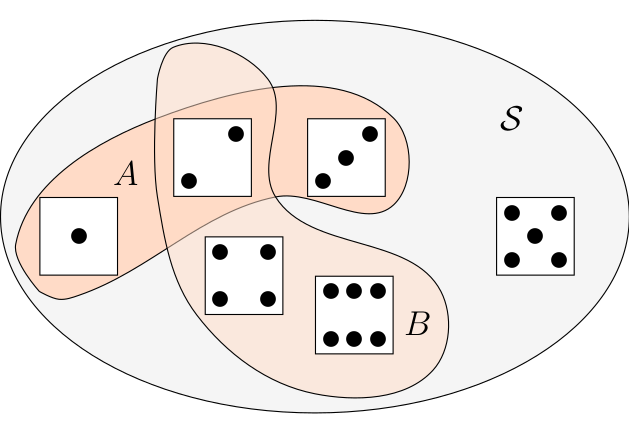
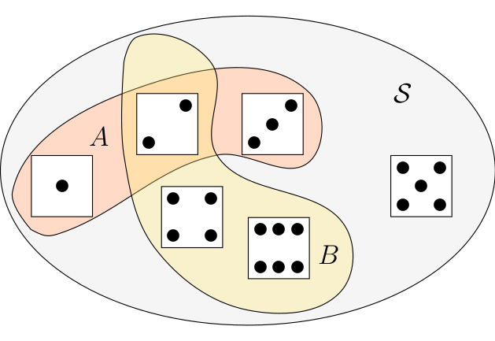
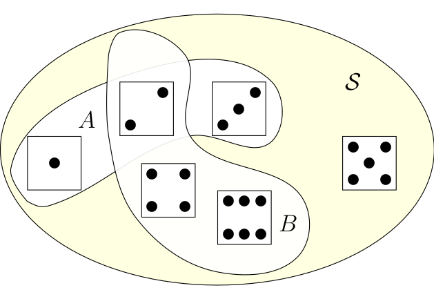
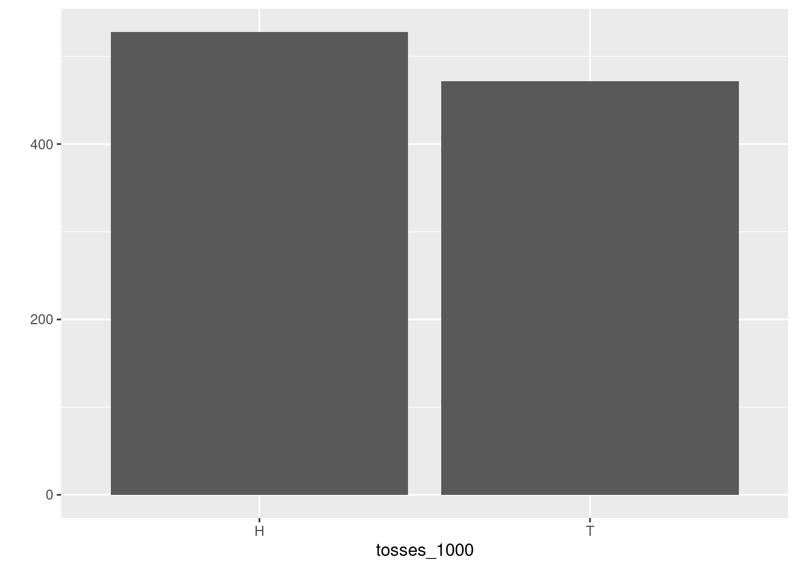
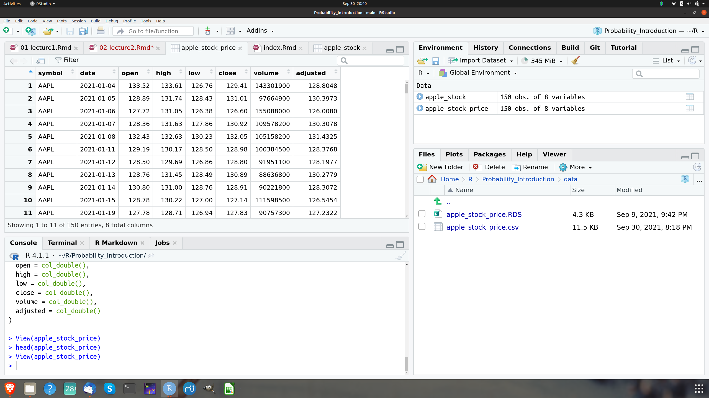

Chapter 3 Probability: Basic Definitions and Rules
3.1 Probability in theory and applications of probability
Now that we have introduced the concepts of a random experiment, sample space, events and basic outcomes, we can finally proceed to introduce the notion of probability. From the preceding lecture it should be clear that we always speak of probability in relation to a given sample space or a conceptual random experiment.
In lecture 1 we said that probability is a measure of how likely an event of an experiment is. Probabilities are expressed as numbers. As observed in Feller (p. 19), these numbers are of the same nature as distances in geometry. In the theory we assume they are given to us. We need not assume anything about how they are measured. In actual applications, the determination of probabilities or the application of the theory to observations requires often sophisticated statistical methods. So, while the mathematical as well as the intuitive meaning of probability are clear only as we proceed with the theory we will get a better ability to see how we can apply this concept.
3.2 Basic rules of probability
When we talk of probabilities in this lecture we mostly consider probabilities with relation to a discrete sample space. The simple sample spaces we considered in lecture 1 contain only a finite number of points. Such sample spaces belong to the discrete sample spaces.
There are also more complicated discrete sample spaces: Think of the random experiment of tossing a coin as often as necessary to see Heads for the first time. We can begin writing down the basic outcomes as: \(E_1=H, E_2=TH, E_3 = TTH, E_4 = TTTH, ...\). We may consider it possible that Head never appears. This event we should perhaps call \(E_0\). In this case, when the basic events can be arranged into a simple sequence. A sample space is called discrete if it contains only finitely many points, or infinitely many points which can be arranged into a simple sequence.
Not all sample spaces are discrete. Except for the technical tools required there is no essential difference between the two cases. In our discussion of probability in this lecture we consider mostly discrete sample spaces.
Given a (discrete) sample space \({\cal S}\) the probabilities assigned to events in this sample space must always fulfill three rules:
- \(P({\cal S}) = 1\), where \({\cal S}\) is the sample space.
- For any event \(A \in {\cal S}\), \(0 \leq P(A) \leq 1\). The probability of an event can never be negative or larger than 1.
- The probability of the union of two events \(A\) and \(B\) is always smaller or equal to the sum of the probability of these events looked at in isolation: \(P(A \cup B) \leq P(A) + P(B)\).
In the theory of probability we use the language of sets and set theory to describe relations among event. We have used one of these relations in rule three, where we expressed the relation between two sets as their union \(\cup\). It is useful in studying probability to know a few of these set theoretic definitions.
Let’s go through them and illustrate the concepts in the context of the examples we have already developed in lecture 1.
- Union
- The union of two events \(A\) and \(B\) is the set that contains all events that are either in \(A\) or in \(B\) or in both sets. Set union is written as \(A \cup B\).

Figure 3.1: The meaning of set union
The sample space \({\cal S}\) is the gray set containing all possible outcomes of our random experiment. Graphically the union of \(A\) and \(B\), \(A \cup B\) is a subset of the sample space, the entire colored area.
By the way: R provides functions for computing set operations. Let us use the occasion to show you briefly how to use these functions in the context of this example: We define the sets \(A\) and \(B\) first using the assignment operator:
A <- c(1,2,3)
B <- c(2,4,6)We compute the union by using the function union()
union(A,B)## [1] 1 2 3 4 6which gives us the result we have already derived graphically.
- Intersection
- The intersection of two events is the set that contains all events that are both in \(A\) and in \(B\). Set intersection is written as \(A \cap B\).

Figure 3.2: The meaning of set intersection
The intersection of \(A\) and \(B\), \(A \cap B\) is the orange area containing the dice face with two points. Indeed two is both in \(A\) and in \(B\), which is exactly the meaning of set intersection.
The R function for computing intersections is called intersect(). We call this function for
our example
intersect(A,B)## [1] 2which gives us the result we have already derived graphically.
- Complement
- The complement of an event \(A\) with respect to an event \(B\) is the set of all elements that are in \(B\) but not in \(A\). Set difference is written as \(A \setminus B\).

Figure 3.3: The meaning of set intersection
This complement is the dice shown in the light yellow area, i.e. all the elements of \({\cal S}\) which are not in \(A \cup B\).
The R function for computing set complements is called setdiff(). You can try it with our
example:
S <- c(1,2,3,4,5,6)
setdiff(S, union(A,B))## [1] 5which is 5, as expected.
- Mutually Exclusive
- Two events \(A\) and \(B\) are said to be mutually exclusive if they have no basic outcomes in common. The notation is \(A \cap B = \emptyset\)
An example in our context is the set of even outcomes \(B=\{2,4,6\}\) and the set of odd outcomes, let us call it \(C=\{1,3,5\}\). If we intersect these sets
B <- c(2,4,6)
C <- c(1,3,5)
intersect(B,C)## numeric(0)we get the empty set, which is expressed by R by giving the data type, in this case numeric, because we are intersecting sets of numeric values, followed by (0). This means, there is no numeric value in the intersection of \(B\) and \(C\).
Let us discuss probability rule 3 a bit further: Go to the picture we drew to illustrate the meaning of set union 3.1. To compute the probability \(P(A \cup B)\) we have to add the probabilities of all sample points that are contained either in \(A\) or in \(B\) but each point is to be counted only once. Therefore, probability rule 3, has a (weak) inequality: \(P(A \cup B) \leq P(A) + P(B)\).
Now let \(E\) be a point contained both in \(A\) and in \(B\), in our example this would be \(E = \{2\}\), then \(P(E)\) occurs twice on the right hand side of our inequality but only once on the left. Therefor the right hand side exceeds the left by the amount \(P(A \cap B\)). Thus we have \(P(A \cup B) = P(A) + P(B) - P(A \cap B)\).
This reasoning holds for arbitrary pairs of events and not only in our example. In the case \(A\) and \(B\) are arbitrary events and \(A\) and \(B\) are mutually exclusive, i.e. \(A \cap B = \emptyset\) then our inequality in rule 3 becomes an equality and we have \(P(A \cup B) = P(A) + P(B)\).
3.3 Interpretations of Probability
While rule 1 - 3 pins down three basic mathematical properties of probabilities, there is an ongoing and still unsettled debate what probabilities actually mean. While in this course we will be less concerned with this philosophical question, it is so important that you should hear about the basic interpretations at least once.
Probability theory took shape in the 17th century through discussions on the mathematics of games of chance, such as poker or roulette or games where dice are rolled. In this stage the classical meaning of probability was the ratio of outcomes that satisfy a condition or the description of an event divided by the total number of outcomes in the state space. Of course this interpretation of probability makes the implicit assumption that all outcomes have the same probability. For example, in this interpretation the probability that one role of a dice will result in a \(6\) is \(1/6\). This interpretation is often called classical probability.
A more important interpretation is the interpretation of probability as relative frequency. In this interpretation the probability of an event \(A\) is interpreted as the number of times the event \(A\) occurs in repeated trials divided by the total number of trials in a random experiment.
A competing interpretation of probability is called subjective probability. In this interpretation probability is an opinion or a belief about how likely the occurence of a particular event is.
3.4 Example continued
3.4.1 The stock price of Apple
Let us go back to our example with the stock price of Apple. In this example we had expressed the state space as \({\cal S}=\{U, D\}\). It is however impossible to determine the probability for each of these two elements. It is also not possible to determine the probability for each price which is theoretically possible.
3.4.2 Tossing a fair coin twice
Assume we toss a fair coin twice and that the two possible outcomes of this random experiment is that the coin comes up heads \(H\) or tails \(T\). The state space of the random experiment of tossing a coin twice is \({\cal S} = \{HH, HT, TH, TT\}\). We can now ask: What is the probability of getting H after the first toss? Since the coin is assumed to be a fair coin each outcome of the toss is equally likely. The probability of getting H after the first toss, must therefore be \(1/2\). Now we could ask: What is the probability that we get H after the second toss as well? If you think about the situation, you will see that the probability of getting H in the second toss is completely unaffected by what happened after the first toss. This probability is independent of the outcome of the first toss and since the coin is a fair coin it is also equally likely to get H as it is to get T. The probability of getting H after the first toss is therefore again \(1/2\).
Here we derived the equal probability postulate by an assumption, interpreting the probability as a classical probability.
We could also give this postulate a frequency interpretation using our knowledge of R.
We proceed by analogy to our approach of rolling a die. Let us therefore create a virtual coin first.
coin <- c("H", "T")As in the case of the die we next write a function, so we can virtually toss the coin
toss_coin <- function(){coin <- c("H", "T")
sample(coin, size = 1) }Now lets toss this coin 100 times by using the replicate function and
save the result in an object called
tosses_100:
tosses_100 <- replicate(100, toss_coin())Lets look at the outcome of the 100 tosses graphically
qplot(tosses_100) The histogram shows that the occurrence of Heads and Tails are almost 50/50 but not
exactly. Lets toss 1000 times and then look again.
The histogram shows that the occurrence of Heads and Tails are almost 50/50 but not
exactly. Lets toss 1000 times and then look again.
tosses_1000 <- replicate(1000, toss_coin())
qplot(tosses_1000)
This looks already pretty good. Lets toss even more. Why not toss a million of times?tosses_m <- replicate(10^6, toss_coin())
qplot(tosses_m)Now you see the idea of the frequency interpretation. The number of occurrences of H divided by the total number of tosses comes closer to the \(1/2\) probability as we toss many times. We will come back to this idea again a bit later.
3.4.3 Boys and Girls
We have introduced the four child family before in lecture 1 and asked you to figure out the state space of the random experiment how the sequences of boys and girls might result in this four children outcome.
If you have correctly figured out the state space, you will surely be able to
tell which of the
following sequences is more likely i.e. has the higher probability: bbbb, bgbg or
gggg?
Let’s use the idea we considered first in coin tossing, and use the expand.grid() function
to figure out all combinations of boys and girls in a family of four kids. The outcome
of the sex of a baby at any of the four births is abstractly the same as a coin toss with
the possible outcomes: b or g.
birth_1 <- c("b", "g")
birth_2 <- c("b", "g")
birth_3 <- c("b", "g")
birth_4 <- c("b", "g")Now we can let R figure out all possible sequences of outcomes. We store the outcome in an
object called n and count the combinations using the R function nrow() which counts the
number of rows of a so called dataframe, a structure we discuss in detail in a minute.
n <- expand.grid(birth_1, birth_2, birth_3, birth_4)
nrow(n)## [1] 16There are 16 combinations in total. Applying the same reasoning as with the coin tossing example, we see that the probability of each sequence should be equal to \(1/16\).
In reality by the way births are slightly more likely for boys than girls. Gelman and Nolan report for example the US numbers for the year 1981, where 1 769 000 girls were born, while there were 1 860 000 boys: \(48.7 \%\) of births were thus girls.
Let us come to our last example,illustrating the interpretation of probability as subjective probability.
3.4.4 Example: FinTech Start Up
Suppose you had a great idea for a path breaking FinTech innovation, which will disrupt the banking landscape. To predict the success of this innovation in probabilistic terms you could only use a subjective probability. There are no data you can rely on, since this idea had not existed before. You can only rely on your experience and your belief in your idea. There is no way you could use a classical or a relative frequency interpretation of probability.
3.5 Independence
Let us go back to our fair die and ask another probability question about the potential outcomes of rolling the die: What is the probability that a fair six sided die will roll a 5 and then a 6?
Note that this is a question, slightly different from what we have asked before. What we need to calculate is actually the probability of the event that the dice shows first 5 and then 6, i.e. we need to compute \(P(5 \cap 6)\). We can multiply the individual probabilities because the subsequent rolls of the die are independent: \(P(5 \cap 6) = P(5) \cdot P(6) = \frac{1}{6} \cdot \frac{1}{6} = \frac{1}{36}\).
Indeed we have the following definition:
- Independence
- Two events \(A\) and \(B\) are independent if an only if the probability of both \(A\) and \(B\) occurring is the product of the probability of the two events \(P(A \cap B) = P(A) \cdot P(B)\).
3.5.1 Example: The Apple stock price again
Let us go back to our Apple stock price data, we have used previously. We read the data again from our data folder.
apple_stock <- readRDS("data/apple_stock_price.RDS")Our data store price information about 150 trading days. During these dates, as you can convince yourself, the price went up on 72 days and it went down on 77 days. It didn’t stay the same at any day. We get in total 149 counts because we need to drop one observation to compute the changes in the price.
Now let us assume that the probability of a future up movement is \(P(U) = \frac{72}{149}\), which is about \(0.48\) and the probability of a down movement is \(P(D) = \frac{77}{149}\), which is about \(0.52\).
Now assume in addition that the performance of the Apple stock price on the current trading day is independent of the performance of the Apple stock price on previous trading days. This means that the probability of \(U\)-movements and of \(D\)-movements is unaffected by the number of previous \(U\) and \(D\) movements. This is - of course - an assumption. You may think about whether this assumption is reasonable.
Now let us consider a week from Monday to Friday:
- What is the probability that the price of Apple will increase on each of the consecutive days?
There are five trading days, so we need to compute \(P(U \cap U \cap U \cap U \cap U \cap U)\). This is by our assumption of independence equal to \(P(U) \cdot P(U) \cdot P(U) \cdot P(U) \cdot P(U)\). By our probability estimate from relative frequency this amounts to \(0.48^5\), which amounts to \(0.025\).
- What is the probability that the stock price will decrease either on Monday, Tuesday, Wednesday, Thursday or Friday and will increase on the other four days?
The probability that the \(D\) movement happens, say on a Monday, is \(P(D \cap U \cap U \cap U \cap U)\) or \(0.52*0.48^4\) which is \(0.028\). We have in total five mutually exclusive scenarios: \(P(D \cap U \cap U \cap U \cap U)\), \(P(U \cap D \cap U \cap U \cap U)\), \(P(U \cap U \cap D \cap U \cap U)\), \(P(U \cap U \cap U \cap D \cap U)\), \(P(U \cap U \cap U \cap U \cap D)\). Thus we have \(0.028 + 0.028 + 0.028 + 0.028 + 0.028\) as the final probability of this event, which is \(0.14\).
3.6 Analyzing the stock price of Apple: More R concepts
By discussing some probability concepts within the context of stock price movements we looked at the Apple stock price data. R gives us some powerful tools to work with such data and they provide a very good example to teach you some more R concepts to enhance our toolbox.
3.7 Loading Data
We loaded the apple stock price data from a file I had provided you in RDS format. This
is not the usual way you will load data into R. The most common case will be that you
get a plain text file, usually in a comma separated form or csv for short. In the data
directory we have a version of the Apple stock price file we already have already worked with
in csv format (apple_stock_price.csv). If you open this file in a text editor it
will look something like this:
symbol,date,open,high,low,close,volume,adjusted
AAPL,2021-01-04,133.520004,133.610001,126.760002,129.410004,143301900,128.804825
AAPL,2021-01-05,128.889999,131.740005,128.429993,131.009995,97664900,130.397324
AAPL,2021-01-06,127.720001,131.050003,126.379997,126.599998,155088000,126.007957
AAPL,2021-01-07,128.360001,131.630005,127.860001,130.919998,109578200,130.307755
AAPL,2021-01-08,132.429993,132.630005,130.229996,132.050003,105158200,131.432465
AAPL,2021-01-11,129.190002,130.169998,128.5,128.979996,100384500,128.376831
AAPL,2021-01-12,128.5,129.690002,126.860001,128.800003,91951100,128.197662 ... etc.
Most languages used for data science applications can open plain text files and export data
as plain text files. This is why you so often find them. To load a plain text file into
R just click the Import Dataseticon in R Studios environment pane. Then select “From
text file.” R-Studio will then ask you to select the file, you want to import. You can use the
wizard to tell RStudio what name to give to the data set (for example apple_stock_price).
You can also use the wizard to tell
RStudio which is the separation character used in your dataset and which character is
used to represent decimals (usually . in the US and , in Europe) and whether
the data set comes with a row of column names or a so called header. To help you, the wizard
shows you what the raw file looks like as well what your loaded data will look like based
on the input settings. I recommend to unclick the box “Strings as factors” in the wizard. This
will ensure that all character strings are loaded as characters (and not converted tp so called
factors). Once everything looks right, click Import. You can examine the data in
with the head() function.
Sometimes, for instance if you write a script, it is more convenient to use a direct command to
read a file. If the decimal sign is . (US convention) use read.csv, if it is , then use
read.csv2(). The syntax for this function, assuming that the file we want to read is in a
directory called data and is named apple_stock_price.csv is
apple_stock_price <- read.csv("data/apple_stock_price.csv")Please use the help functions to study the details of this function. It is quite powerful.
You can inspect the entire dataset using the View()function like this:
View(apple_stock_price)This command will open a View pane like shown in this picture, which you can use to inspect all the data pretty much like in an excel sheet.

Figure 3.4: The result of calling the View() function
There are many more possibilities to import data into R from many other formats, which we will not discuss here. The principle is basically always the same and we refer you to the help menus for further details.
3.8 Saving Data
Data can be saved by using the write.csv() function. It allows you to export data as a
comma separated text file. (There are many more export or saving options we do not discuss here).
If we would like to save the apple_stock_price object we have just assigned to a csv file we
would write
write.csv(apple_stock_price, file = "data/prices.csv", row.names = FALSE)Wit this command R turns the R-object apple_stock_price into a csv file with the name
prices.csv and stores it in a subdirectory called data. There are many possible
arguments you can set with write.csv() (see ?write.csv for details) but there are three
you should always use: First you should give write.csv() the name of the object you want to
save. Then you should give a name (if necessary with a path) to the object. Make sure to give
the full name with extension. Finally you should set the argument row.names = FALSE. It prevents
R from adding an extra column with a counting index for the rows. It is unlikely that another
program which reads the data will interpret the row name system correctly.
3.9 Atomic vectors
An atomic vector is just a simple vector of data, like the die we have already constructed
die <- c(1, 2, 3, 4, 5, 6)
die## [1] 1 2 3 4 5 6We can use R to check whether dieis a vector
is.vector(die)## [1] TRUEAn atomic vector can have only 1 value also. Each atomic vector stores values as a one-dimensional vector and can only store one type of data. Different types of data can be saved by different types of atomic vectors. R recognizes altogether six basic types of atomic vectors: doubles, integers, characters, logical, complex and raw.´
3.9.1 Doubles
A double vector stores regular numbers. In our data these are the columns open, high, low, close, volume and adjusted. In general R will save any number you type as a double. Doubles can be positive negative, large or small and can have digits or not. Ususally it is obvious what type of object you are working with but you can check also.
Let us create a new object close by selecting the column lose`from apple_stock_price. In R this is done by typing:
close <- apple_stock_price$closeWe use the symbol $ followed by the name of the column we want to select and assign the
selected column to an object called close. Now check the type by invoking the typeof()function:
typeof(close)## [1] "double"3.9.2 Integers
Integer vectors store numbers that can be written without commas. We will not need them very often in probability and finance, because you can save integers also as doubles.
Integers can be specifically created in R by typing the number followed by an upper case L.
int <- c(-1L, 2L, 4L)
int## [1] -1 2 4typeof(int)## [1] "integer"3.9.3 Characters
A character vector stores small pieces of text. For instance the stock symbol is such a character. Lets select the symbol column and check:
symb <- apple_stock_price$symbol
typeof(symb)## [1] "character"The individual elements of a character vector are called strings. A string can contain more than just one letter. Character strings can be assembled from numbers and symbols as well. We have encountered characters in some of our examples already before.
It is easy to confude R objects with character strings and you have to be careful to avoid that.
For example symb is the name of an R object names symb, while “symb” in quotations is a string
containing the characzers symb. If you forget the quotation marks R will look for an object which
probably won’t exist.
3.9.4 Logicals
Locial vectors store TRUE and FALSE, Rs form of boolean values. Logicals are very helpful
for comparisons. Assume we are interested how many closing prices are smaller than 124.
We have already created an object close. So we would type
close < 124## [1] FALSE FALSE FALSE FALSE FALSE FALSE FALSE FALSE FALSE FALSE FALSE FALSE
## [13] FALSE FALSE FALSE FALSE FALSE FALSE FALSE FALSE FALSE FALSE FALSE FALSE
## [25] FALSE FALSE FALSE FALSE FALSE FALSE FALSE FALSE FALSE FALSE FALSE FALSE
## [37] TRUE TRUE FALSE FALSE TRUE TRUE TRUE TRUE TRUE TRUE TRUE TRUE
## [49] TRUE FALSE FALSE TRUE TRUE TRUE TRUE TRUE TRUE TRUE TRUE TRUE
## [61] TRUE TRUE FALSE FALSE FALSE FALSE FALSE FALSE FALSE FALSE FALSE FALSE
## [73] FALSE FALSE FALSE FALSE FALSE FALSE FALSE FALSE FALSE FALSE FALSE FALSE
## [85] FALSE FALSE FALSE FALSE FALSE TRUE FALSE FALSE FALSE FALSE FALSE FALSE
## [97] FALSE FALSE FALSE FALSE FALSE FALSE FALSE FALSE TRUE FALSE FALSE FALSE
## [109] FALSE FALSE FALSE FALSE FALSE FALSE FALSE FALSE FALSE FALSE FALSE FALSE
## [121] FALSE FALSE FALSE FALSE FALSE FALSE FALSE FALSE FALSE FALSE FALSE FALSE
## [133] FALSE FALSE FALSE FALSE FALSE FALSE FALSE FALSE FALSE FALSE FALSE FALSE
## [145] FALSE FALSE FALSE FALSE FALSE FALSE3.9.5 Coercion
R implements a coercion system for types which always follows the same rules. Once you are familiar with these rules you will find them very useful.
How does R coerce data types? If a character string is present in an atomic vector, R coerces every element in this vector to character strings. If the vector contains logicals and numbers every TRUE becomes a 1 and every FALSE becomes a 0. The same coercion rules are used when you try to do math with logicals
This is very convenient. Say we want to count the instances when
the closing price of Apple stock was smaller than 124, i.e. when the logical is TRUE.
We can use the sum()function
for that because R will treat each TRUE as a 1 and FALSE as a 0 when used with an algebraic
operation.
sum(close < 124)## [1] 24We count exactly 24 days when this was true in our sample. As a consequence of this cool feature we can compute the porportion of days in our sample when the stock price of Apple was below 124 as
mean(close < 124)## [1] 0.163.9.6 Complex and Raw
These data types are much less common than the ones we discussed before. They store complex numbers and raw bytes of data. At the moment we will not say much more about these two types.
3.10 Lists
Lists are like atomic vectors because they group data into a one-dimensional set. However
lists do not group individual values but they group R objects, such as different
atomic vectors or other lists. For example, you can make a list that contains
a numeric vector of length 31 in the first element, a character vector of length 1 in its second
and a new list with length 2 in its third. This is done by using the list()function:
test_list <- list(100:130, "R", list(TRUE, FALSE))
test_list## [[1]]
## [1] 100 101 102 103 104 105 106 107 108 109 110 111 112 113 114 115 116 117 118
## [20] 119 120 121 122 123 124 125 126 127 128 129 130
##
## [[2]]
## [1] "R"
##
## [[3]]
## [[3]][[1]]
## [1] TRUE
##
## [[3]][[2]]
## [1] FALSElist creates a list in the same way as c creates a vector. Seperate every element in the
list by a comma.
The double-bracketed indexes tell you which element of the list is beeing displayed. The single bracketd indexes tell you which subelement of an element is beeing displayed.
3.11 Data Frames
Data frames are the two-dimensional versions of a list. They are by far the most frequent data structure we will use. For example the apple_stock_price object we have created by reading the csv datafile is a data frame. Think of a data frame as something like an Excel spreadsheet.
Data frames group vectors together into a two dimensional table. Each vector becomes a column of this table. As a result each column can contain different types of data. The symbol column contains characters, the close column contains doubles for example.
3.12 Project 2: Analyzing stock price changes
- Load the data for the netflix stock price.
- Estimate the probability that the netflix stock price will rise from the share of daily up moves in the total trading days.
- Estimate the probability that the stock price will fall in a similar way.
- Assuming independence what is the probability that the price will rise from Monday to Wednesday and than fall on Thursday and Friday?